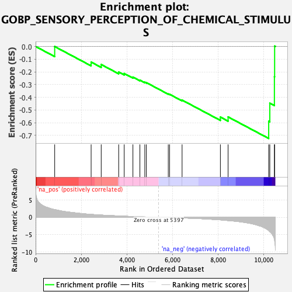
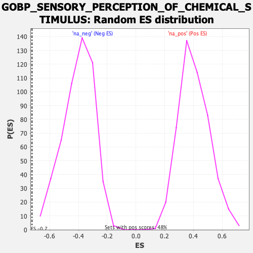

| Dataset | qlf.KOd4vsWTd4_gsea_score |
| Phenotype | NoPhenotypeAvailable |
| Upregulated in class | na_neg |
| GeneSet | GOBP_SENSORY_PERCEPTION_OF_CHEMICAL_STIMULUS |
| Enrichment Score (ES) | -0.72364676 |
| Normalized Enrichment Score (NES) | -1.8040848 |
| Nominal p-value | 0.0 |
| FDR q-value | 0.043218847 |
| FWER p-Value | 0.934 |

| SYMBOL | RANK IN GENE LIST | RANK METRIC SCORE | RUNNING ES | CORE ENRICHMENT | |
|---|---|---|---|---|---|
| 1 | MKKS | 836 | 2.214 | -0.0006 | No |
| 2 | PDE4A | 2433 | 0.839 | -0.1228 | No |
| 3 | UBR3 | 2875 | 0.637 | -0.1420 | No |
| 4 | GNB1 | 3641 | 0.385 | -0.2012 | No |
| 5 | TTC8 | 3883 | 0.321 | -0.2127 | No |
| 6 | B2M | 4265 | 0.223 | -0.2410 | No |
| 7 | PKD1L3 | 4571 | 0.149 | -0.2648 | No |
| 8 | REEP2 | 4786 | 0.108 | -0.2813 | No |
| 9 | GNAS | 4855 | 0.095 | -0.2844 | No |
| 10 | BBS4 | 5815 | -0.066 | -0.3735 | No |
| 11 | GNAL | 5872 | -0.074 | -0.3761 | No |
| 12 | B3GNT2 | 6420 | -0.183 | -0.4217 | No |
| 13 | ADCY3 | 8099 | -0.736 | -0.5554 | No |
| 14 | PLCB2 | 8437 | -0.935 | -0.5541 | No |
| 15 | ITPR3 | 10217 | -3.775 | -0.5887 | Yes |
| 16 | LEF1 | 10266 | -4.114 | -0.4463 | Yes |
| 17 | RTP4 | 10467 | -6.355 | -0.2383 | Yes |
| 18 | NAV2 | 10477 | -6.776 | 0.0030 | Yes |
